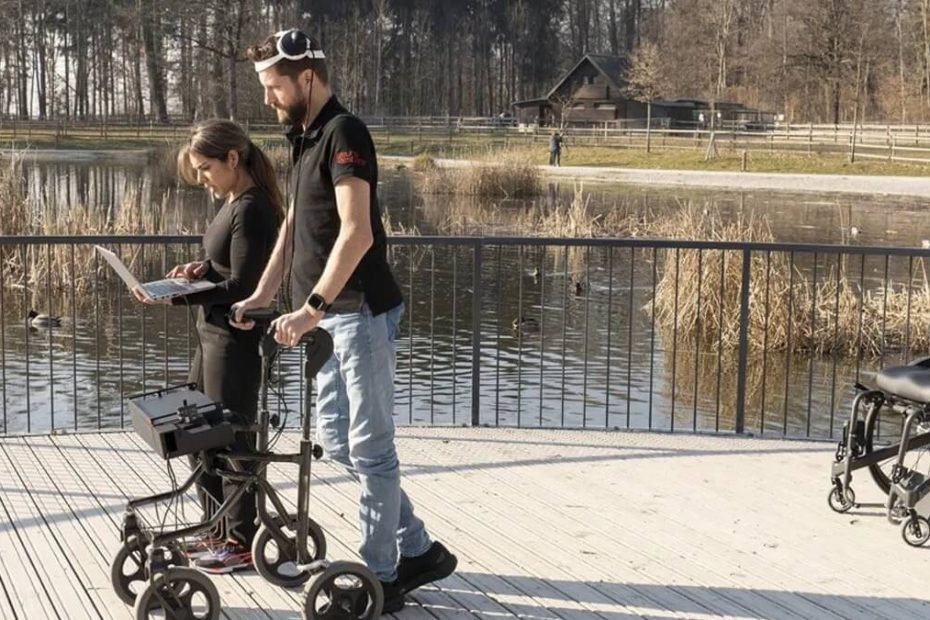

Gert-Jan Oskam ဟာ လွန်ခဲ့တဲ့ ၁၂ နှစ်ခန့်က စက်ဘီး မတော်တဆမှုကြောင့် လည်ပင်းက ကျောရိုး အာရုံကြောမကြီး ထိခိုက် သွားခဲ့ ရပါတယ်။ ဒီ ထိခိုက်ဒါဏ်ရာကြောင့် သူဟာ အောက်ပိုင်းသေ သွားခဲ့ရသလို လက်တွေဟာလဲ ကောင်းကောင်း လှုပ်ရှားနိုင်စွမ်း မရှိတော့ ပါဘူး။
အဲ့သည်အချိန် ကတဲက လက်တွန်းလှည်းနဲ့ သွားလာ ခဲ့ရတဲ့ အော့စ်ကမ် တယောက် အခုအခါ မှာတော့ နည်းပညာ အကူအညီကြောင့် ပြန်လည် လမ်းလျှောက်နိုင်ပြီ ဖြစ်ပါတယ်။
သူ့ကို လမ်းလျှောက် စေနိုင်အောင် စွမ်းဆောင်ပေးနိုင်တဲ့ နည်းပညာ ကတော့ ဦးဏှောက်နဲ့ ပြတ်သွားတဲ့ အာရုံကြော တွေအကြားကို ဆက်စပ်ပေးတဲ့ စက်ကိရိယာပဲ ဖြစ်ပါတယ်။
အော့စ်ကမ် အတွက်တော့ ဒီ နည်းပညာဟာ တကယ့်ကို သူ့ဘဝအတွက် အပြောင်းလဲကြီး ပြောင်းလဲ သွားစေတဲ့ နည်းပညာပဲ ဖြစ်ပါတယ်။ ဥပမာ ပြီးခဲ့တဲ့ အပတ်က သူ့အိမ်ကို ဆေးသုတ်ဖို့ လိုအပ်တဲ့ အခါမှာ သူ့ကို ကူညီမယ့်သူ ရှာမရ ခဲ့ပါဘူး။ ဒါ့ကြောင့် သူဟာ ဆေးပုံးနဲ့ ဆေးသုတ်စုတ်တံကို ကိုယ်တိုင် ကိုင်ပြီး မတ်တတ်ရပ် ဆေးသုတ်ခဲ့ပါတယ်။ ဒီလို လုပ်နိုင်တာဟာ ဒီ နည်းပညာရဲ့ အကူအညီ ကြောင့်ပဲ ဖြစ်ပါတယ်။
ဒီ စက်ကိရိယာကို brain–spine interface လို့ အမည် ပေးထားပါတယ်။ ဒီ နည်းပညာကို ပထမဆုံး အောင်အောင်မြင်မြင် တီထွင်နိုင် ခဲ့သူကတော့ ဆွစ်ဇာလန် နိုင်ငံ လောစိန်း (Lausanne) မြို့မှာ တည်ရှိတဲ့ Swiss Federal Institute of Technology က ဦးဏှောက်နှင့် အာရုံကြော ပညာရှင် Grégoire Courtine ပဲ ဖြစ်ပါတယ်။ အခု စက်ကိရိယာဟာ သူ့ရဲ့ သုတေသန အပေါ် အခြေပြုပြီး တည်ဆောက် ထားတာ ဖြစ်ပါတယ်။
၂၀၁၈ မှာ Grégoire Courtine ဦးဆောင်တဲ့ အဖွဲ့ဟာ အောက်ပိုင်းသေတဲ့ လူနာတွေရဲ့ အာရုံကြော တွေကို လျှပ်စစ်ဓါတ်အား အသုံးပြုပြီး ပြန်လည် လှုပ်ရှားအောင် လေ့ကျင့်ပေးလို့ ရတယ် ဆိုတာကို လက်တွေ့ သက်သေ ပြခဲ့ပါတယ်။
အော့စ်ကမ် ဟာ ဒီ သုတေသနမှာ ပါဝင်တဲ့ သူတွေ အနက်က တစ်ဦး ဖြစ်ပါတယ်။ ပညာရှင် တွေက သူ့ရဲ့ ကြောရိုးအာရုံကြော မကြီး ထဲကို လျှပ်စစ်ငုတ် တွေကို ခွဲစိတ်ပြီး ထည့်သွင်း ပေးခဲ့ပါတယ်။ နောက်ပြီး ဦးခေါင်းထဲ မှာလဲ လျှပ်စစ်ငုတ် ၆၄ ခုကို ခွဲစိတ် ထည့်သွင်း ခဲ့ပါတယ်။
ဒီ့နောက် ဒီ ဦးခေါင်းက လျှပ်စစ် ငုတ် တွေနဲ့ ကြောရိုး အာရုံကြော မကြီးက လျှပ်စစ်ငုတ် တွေနဲ့ကို ကျော်ပိုးအိတ် ထဲမှာ သယ်ဆောင်ရတဲ့ ကွန်ပြူတာနဲ့ ကို ကြိုးမဲ့ wireless စနစ်နဲ့ ဆက်စပ် ပေးလိုက်ပါတယ်။
အော့စ်ကမ် က လမ်းလျှောက်ဖို့ အကြောင်း စဉ်းစားလိုက် ချိန်မှာ သူ့ရဲ့ ဦးဏှောက်အတွင်းမှာ လျှပ်စစ် စီးကြောင်းတွေ ဖြစ်ပေါ် လာပါတယ်။ ဦးဏှောက်နဲ့ တွယ်ဆက်ထားတဲ့ လျှပ်စစ်ငုတ် တွေက ဒီ လျှပ်စစ်စီးကြောင်း တွေကို ဖမ်းယူပြီး သူ့ရဲ့ ကြောပိုးအိတ်ထဲ ထည့်သွင်းထားတဲ့ ကွန်ပြူတာ ဆီကို wireless နည်းနဲ့ ပို့ဆောင်ပေးပါတယ်။
ဒီ ကြောပိုး ကွန်ပြူတာက ရလာတဲ့ အချက်အလက် တွေကို ပြန်ပြီး အဓိပ္ပါယ် ဖေါ်ပေးပါတယ်။ ဒီ့နောက် လိုအပ်တဲ့ ညွှန်ကြားချက် တွေကို ကြောရိုး အာရုံကြော မကြီးတဲ့ ချိတ်ဆက်ထားတဲ့ လျှပ်စစ် ငုတ်တွေဆီ ပို့ဆောင် ပေးပါတယ်။
အရင်က တည်ထွင်အောင်မြင် ခဲ့ကြတဲ့ အလားတူ စက်ကိရိယာတွေဟာ ခြေလှမ်းတွေကို စက်ရုပ် သွားသလို တောင်ဆတ် တောင်ဆတ် သွားအောင်ပဲ ပြုလုပ် ပေးနိုင် ခဲ့ပါတယ်။ ဒါ
ပေမယ့် အခု နည်းပညာ ကတော့ ခြေလှမ်းနဲ့ ခြေထောက် လှုပ်ရှားမှု တွေကို သာမန်နဲ့ မခြား လှုပ်ရှားနိုင်အောင် စွမ်းဆောင် ပေးနိုင်ပါတယ်။ အခုဆို အော့စ်ကမ် ဟာ ခြေလှမ်းတာ၊ လမ်းလျှောက်တာ၊ လှေကားတက်တာ တွေကို သာမန်ကဲ့သို့ နီးပါး ပြုလုပ်နိုင်ပြီ ဖြစ်ပါတယ်။
ဒီ စက်ကို တပ်ဆင်ပြီးတာနဲ့ ချက်ခြင်း ထလမ်းလျှောက်နိုင်တာတော့ မဟုတ်ပါဘူး။ ခြေထောက်တွေကို စိတ်နဲ့ ထိန်းချုပ်နိုင်အောင်လို့ လေ့ကျင့်ခန်းတွေကို ရက် ၄၀ ခန့် ပြုလုပ်ပြီးမှ စတင် ထိန်းချုပ် နိုင်တာ ဖြစ်ပါတယ်။
ပညာရှင် တွေကတော့ ဒီ လေ့ကျင့်ခန်း တွေက ပြတ်သွားတဲ့ အာရုံကြော တွေကို ပြန်လည် ရှင်သန်လာအောင် ပြုလုပ် ပေးတာကြောင့် လမ်းလျှောက်တာကို အထောက်အကူ ဖြစ်စေတယ်လို့ ယူဆ ကြပါတယ်။ ဒီ အယူအဆ အတွက် သက်သေကတော့ အောစ်ကမ် ဟာ အခုအခါ စက်ကို အသုံးမပြုပဲ ချိုင်းထောက် အကူအညီနဲ့ ခြေလှမ်း အနည်းငယ် စတင် လျှောက်လှမ်းနိုင်ခြင်းပဲ ဖြစ်ပါတယ်။
နယူးဇီလန် နိုင်ငံ အောက်လန် မြို့ က University of Auckland က ဦးဏှောက်နှင့် အာရုံကြော ပညာရှင် Bruce Harland က ဒီလို ကြောရိုး အာရုံကြော မကြီး ဒါဏ်ရာရပြီးနောက် ပြန်လည် ကောင်းမွန်လာတဲ့ အချက်ဟာ ဒီလို ကြောရိုး ထိခိုက်တဲ့ လူနာတွေ အတွက် အားတက်ဖွယ် သတင်းကောင်း ဖြစ်တယ်လို့ မှတ်ချက် ပြုပါတယ်။
အခြား ဦးဏှောက်နဲ့ အာရုံကြော ပညာရှင် တွေကလဲ အခု သုတေသန ရလဒ်နဲ့ ပါတ်သက်လို့ အတော်လေး စိတ်လှုပ်ရှား နေကြပါတယ်။ ဒါဟာ ကြီးမားတဲ့ အောင်မြင်မှု တစ်ခုဖြစ်တယ်လို့လဲ သူတို့က မှတ်ချက် ပြုပါတယ်။
သူတို့ရဲ့ အမြင်အရ ဒီ အောင်မြင်မှုအပေါ် ထပ်ဆင့်ပြီး တိုးတက်မှု ရနိုင်စေတဲ့ အခြား နည်းလမ်းတွေလဲ ရှိသေးတယ်လို့ ဆိုပါတယ်။ ဥပမာ stem cell ကုသမှုလို ကုထုံးတွေဟာ အခု ရလဒ်ကို ပိုမ်ို ကောင်းမွန်အောင် ဖြည်စွက် ပေးနိုင်မယ်လို့ သူတို့က ယူဆပါတယ်။
ပညာရှင် တွေကတော့ ကြောရိုး အာရုံကြောမကြီး ထိခိုက်လို့ အောက်ပိုင်းသေ သွားတဲ့သူတွေ လမ်းပြန်လျှောက်နိုင်အောင် ကုသပေးနိုင်မယ့် အခြေအနေဟာ သိပ်မဝေးတော့တဲ့ အနာဂါတ်မှာ ဖြစ်လာတော့မယ်လို့ ဆိုကြပါတယ်။
Ref: Brain-Spine Interface Allows Paralyzed Man to Walk Using His Thoughts | Scientific American
စိတ်ဖြင့် ထိန်းချုပ်ပြီး အောက်ပိုင်းသေသူ လမ်းလျှောက်နိုင်စေသောစက် တီထွင်အောင်မြင်

June 1, 2023
Other Posts
- ကမ္ဘာဟာ black hole တခုရဲ့ ဝါးမြိုခြင်း ခံရနိုင်သလား
- စကြာဝဠာအတွင်း အစောဆုံး အော်ဂဲနစ် ဒြပ်ပေါင်း ဂျိမ်းစ်ဝက်ဘ် ရှာဖွေတွေ့ရှိ
- SpaceX ကုန်တင်ယာဉ် အပြည်ပြည်ဆိုင်ရာ အာကာသစခန်းသို့ အောင်မြင်စွာ ဆိုက်ကပ်နိုင်ခဲ့
- မစ်ကီးဝေးရဲ့ ဗဟိုက ထူးဆန်းတဲ့ ရေဒီယို အချက်ပြလှိုင်းများ
- ဂလက်ဆီ နှစ်လုံး တိုက်မိတဲ့ ဓါတ်ပုံ
- အိုင်းစတိုင်း လက်စွပ်
- ကမ္ဘာ့အမြန်ဆုံး ဆူပါကွန်ပြူတာ အမေရိကန် တီထွင်
- ကြာသပတေးဂြိုဟ်ပေါ် လူသားတွေ ဆင်းနိုင်မလား
- နောက်တကြိမ် ပြန်မြင်တွေ့ရမယ့် ဆူပါနိုဗာ ကြယ်ပေါက်ကွဲ မှုကြီး
- စကြာဝဠာကနဦးမှ ရှေးအကျဆုံး black hole တွင်းနက်ကြီး ဂျိမ်းစ်ဝက်ဘ် ရှာတွေ့